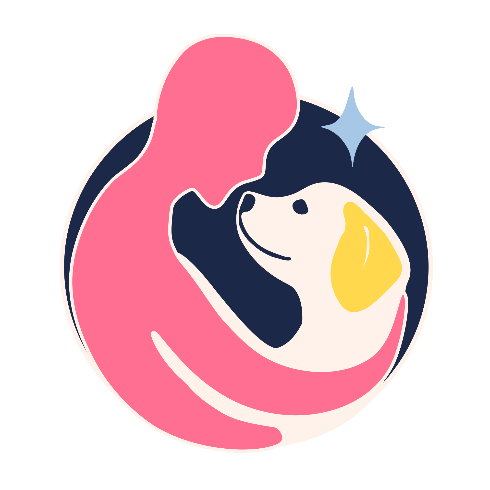
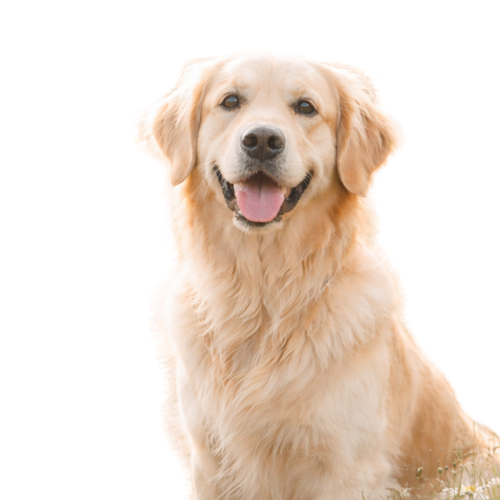
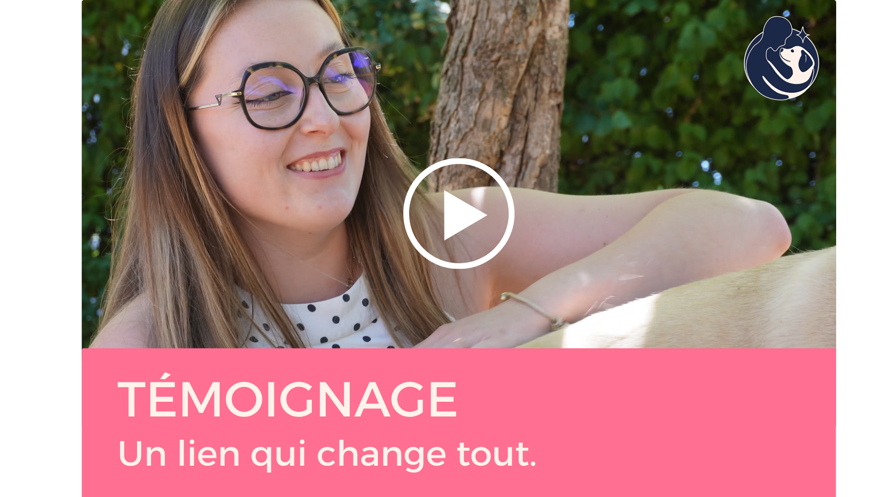

AFCS
Association Française
des Chiens de Soutien
Newsletter #1
Mai 2026


Témoignage en vidéo
Découvrez le témoignage de Doriane et de son chien de soutien. Un récit sincère et émouvant sur leur quotidien ensemble.
Voir la vidéo →💗 Leur présence, leurs bienfaits
♡
Soutien émotionnel
Ils apportent réconfort, apaisement et sécurité au quotidien.
👥
Lien social renforcé
Ils facilitent les échanges et créent des ponts entre les personnes.
☼
Réduction du stress
Leur présence aide à diminuer l’anxiété et favorise le bien-être.
🐾
Compagnons de vie
Ils accompagnent dans les moments difficiles comme dans les grands.
Ensemble, continuons à faire la différence
Votre soutien permet à encore plus de binômes de vivre cette belle aventure.